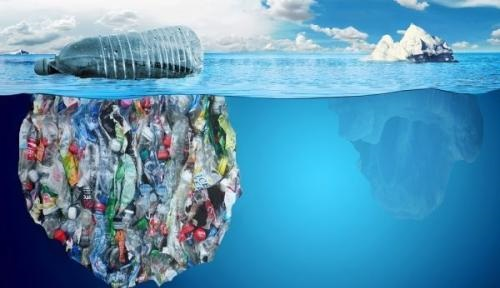
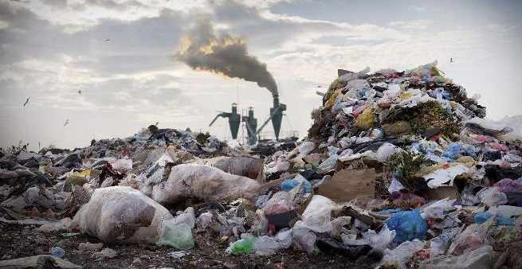
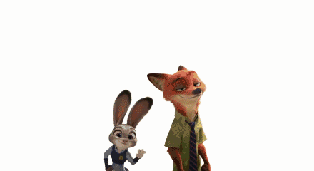
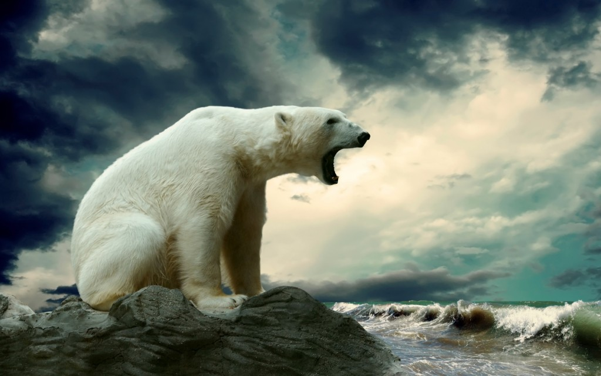

海洋污染
更多...
主要是从油船与油井漏出来的原油，农田用的杀虫剂和化肥，工厂排出的污水，矿场流出的酸性溶液；它们使得大部分的海洋湖泊都受到污染，结果不但海洋生物受害，就是鸟类和人类也可能因吃了这些生物而中毒。
陆地污染
更多...
垃圾的清理成了各大城市的重要问题，每天千万吨的垃圾中，好些是不能焚化或腐化的，如塑料、橡胶、玻璃、铝等废物，它们成了城市卫生的第一号敌人。
呼吁大家采取行动，遏制自然界不断加速的物种丧失和自然栖息地退化趋势。受人类活动的影响，100万种动植物物种面临灭绝的风险。增强青少年生态环保的主人翁意识，推动形成从我做起、从小事做起、从现在做起，用实际行动关爱生物环境、呵护生态家园。
白鳍豚
更多...
 因为长江中下游的垃圾随意堆放于河岸，而无分类，管理，船舶的垃圾随意排入河里，尤其是最近些年建筑垃圾、化工垃圾随废液倾倒、从船上偷倒，毒性越来越大、越来越强，别说白鳍豚，就连其同属的伙伴淡水江豚的数量也每况愈下。
因为长江中下游的垃圾随意堆放于河岸，而无分类，管理，船舶的垃圾随意排入河里，尤其是最近些年建筑垃圾、化工垃圾随废液倾倒、从船上偷倒，毒性越来越大、越来越强，别说白鳍豚，就连其同属的伙伴淡水江豚的数量也每况愈下。
北极熊
更多...
野生动植物研究人员发现新的证据，因全球变暖栖息地受到严重威胁的北极熊，又受到化学化合物的危害。这些化合物主要是欧洲用来降低沙发、衣服和地毯等家庭用品可燃性的有毒化学物质。